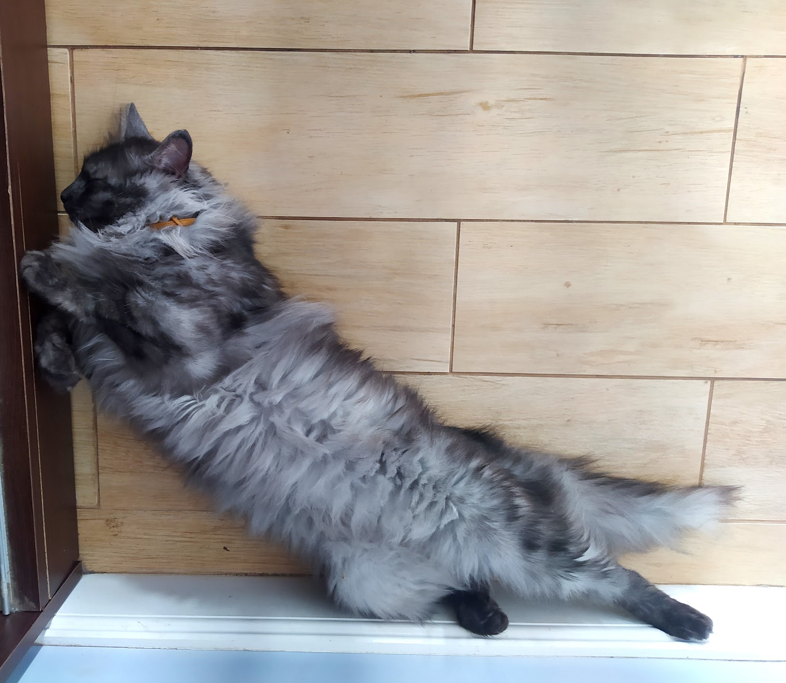

Моя кошечка Мурка
Немного о Мурке
Мурку мы нашли в парке маленьким котеночком, но сразу поняли, что полюбим ее. Она мурчала нам всю дорогу, поэтому мы так ее и назвали - Мурка. Теперь Мурке уже пять лет, и она чудесная и ласковая кошка.
А вот и наша Мурка!

Мы не знаем, породистая ли Мурка, но кажется она похожа на Сибирскую
 Немного больше о сибирских кошках
Немного больше о сибирских кошках
Наша Мурка умеет:
- Мурлыкать громко как мотор
- Ловить мышек и птичек
- Драть диван, когда ей хочется, чтобы на нее обратили внимание
- Принимать изящные позы для фото
- И многое другое
Но у нас есть и другие животные:
- кошка Пушинка
- собака Жуля
- собака Фиалка
- собака Гавка